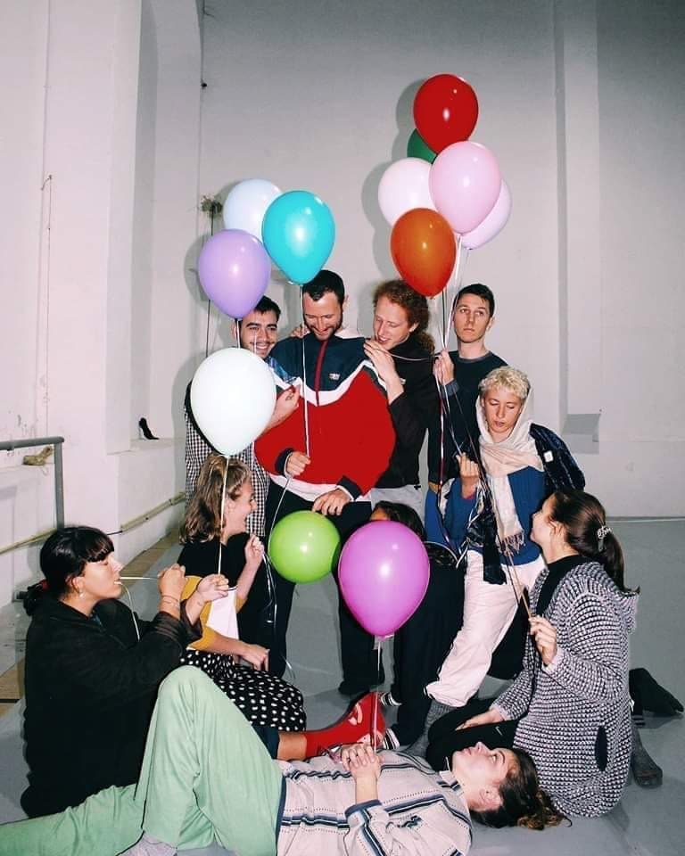
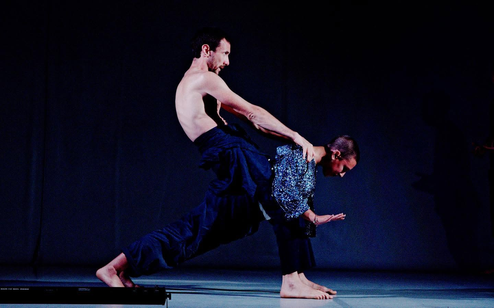
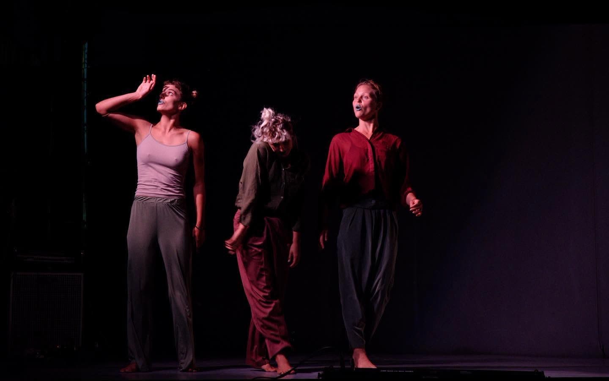
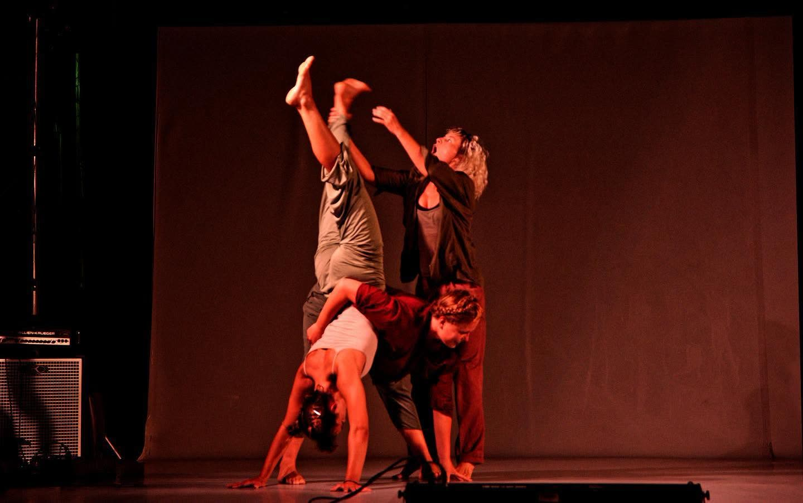
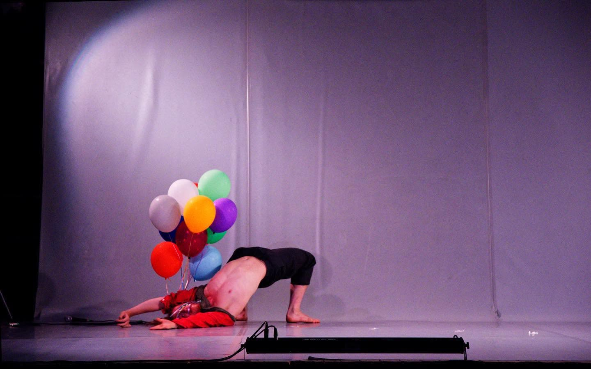
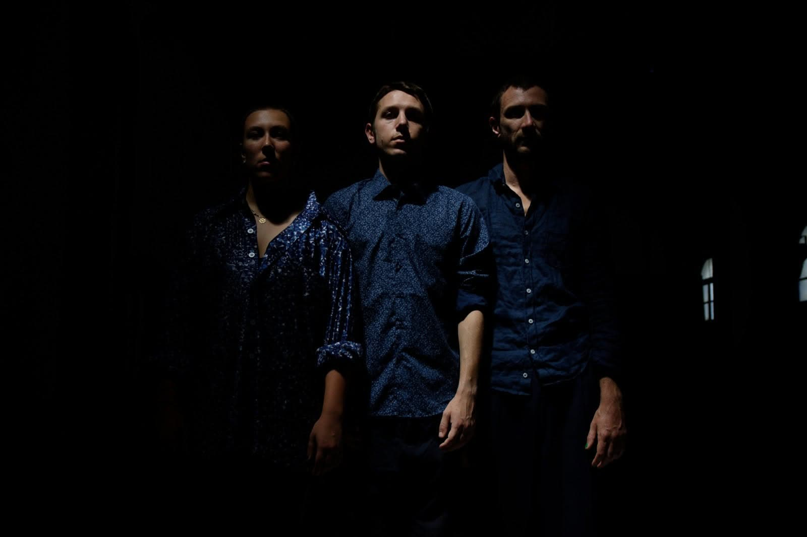
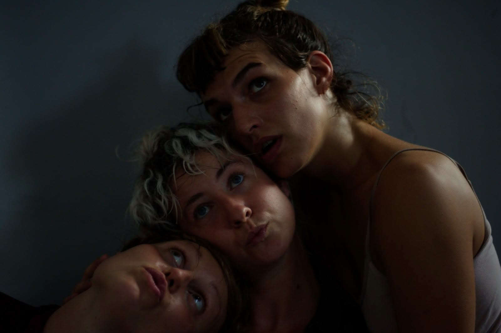
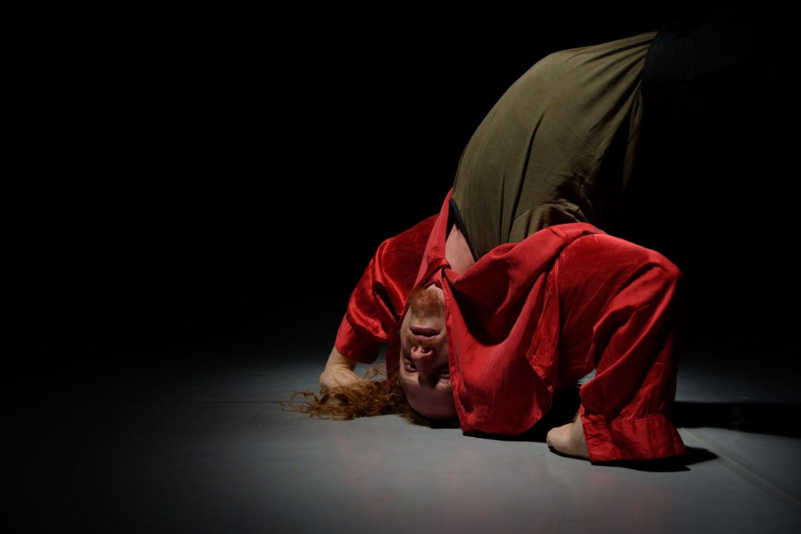

© Florian Astraudo
Creation - Juliana Fernandes
Co-creation and Performance - Bart Nusink, Eva Anouk, Marlen Pflüger, Rebecca Läng, Mariana Oliveira, Emilio Bagnasco and Maxime Renaud-Cavanna
Trailer and Music Edition - Juliana Fernandes
Footage - Multiplicidades Festival, Florian Astraudo
Support - Performact
Music
Arborescence – Úlfur
Serpentine – Úlfur
Tómio Tritar – Úlfur
There is Honey in the Moon Tonight – Chick MacGregor
Hello Dolly – Jerry Herman, Magic Swing Band
Les Animaux à Métamorphoses – Yasunoshin Morita
HEM-TAI Duo (Yasutaka Hemmi & Tomoki Tai)








© Florian Astraudo